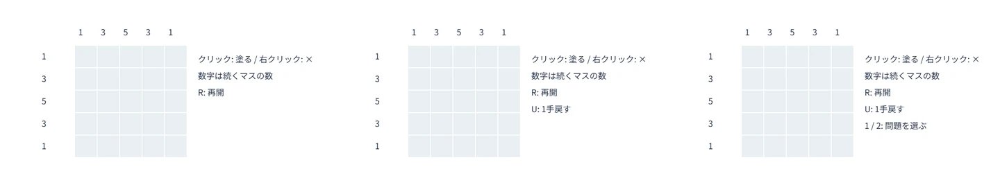
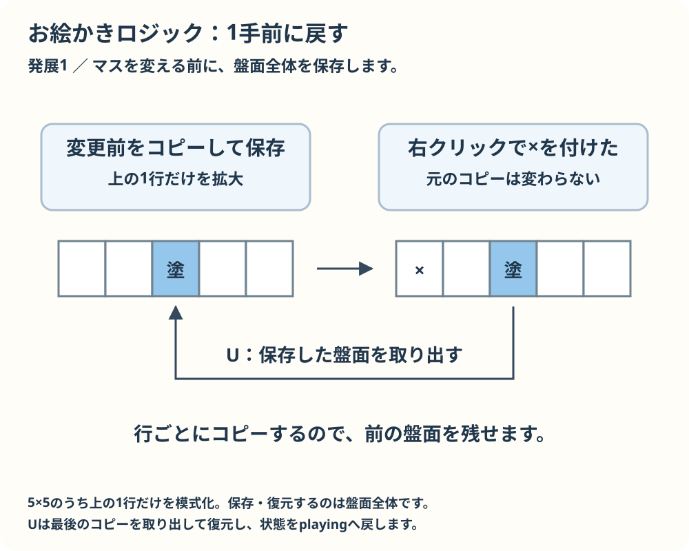

お絵かきロジックの発展
始める前に
基本編の完成版から始めます。ZIPを展開してできたフォルダーでindex.htmlを開きます。ZIPには基本編の3ファイルが入っています。
WindowsでZIPを展開する（動画）
各段階の変更を上から順に加え、保存したら index.html を開くか再読み込みします。
ステップ 1：1手戻す
このステップの見本を図で見る
history.push(変更前の盤面)
塗る前の状態をコピー
cells[y][x] = 1
今の盤面だけ中央が塗られる
cells = history.pop()
保存した盤面へ戻る
ゲーム画面とコードの前後を見る

このステップの見本
cells = Array.from({length: 5}, () => Array(5).fill(0)); state = "playing";
変わったコードの一例（script.js）cells = Array.from({length: 5}, () => Array(5).fill(0)); state = "playing"; history = [];
見本で確かめること
塗った後Uを押すと前の状態に戻ります。
目標
基本版に操作を追加します。
確認欄までは準備中です。作業を順に進め、確認欄で保存して動作を確かめます。
書く場所と置き換えるコード
操作履歴を覚える
作業用フォルダーの script.js で、次の範囲を探して置き換えます。
置き換える範囲
let puzzle, cells, state;
置き換えるコード
let puzzle, cells, state, history;
history は変更前の盤面を順に保存する配列です。
履歴を空にして始める
作業用フォルダーの script.js で、次の範囲を探して置き換えます。
置き換える範囲
cells = Array.from({length: 5}, () => Array(5).fill(0)); state = "playing";
置き換えるコード
cells = Array.from({length: 5}, () => Array(5).fill(0)); state = "playing"; history = [];
盤面を戻すときに履歴も空にします。
戻す操作を案内する
作業用フォルダーの script.js で、次の目印を探し、その直後に書きます。
目印
ctx.fillText("R: 再開", 475, 230);
書き足すコード
ctx.fillText("U: 1手戻す", 475, 270);
U キーで1手戻せることを表示します。
変更前の盤面を保存する
作業用フォルダーの script.js で、次の目印を探し、その直後に書きます。
目印
if (x < 0 || x >= 5 || y < 0 || y >= 5) return;
書き足すコード
history.push(cells.map(row => [...row]));
各行を [...row] でコピーし、現在の盤面を履歴に追加します。後からマスを変えても保存した内容は変わりません。

マスを変える前に、盤面のコピーを保存します。Uを押すと、最後に保存した盤面へ戻せます。コピーを行ごとに作ると、操作前の状態をそのまま残せます。
上1行の抜粋で中心塗りの後、左端へ×を付ける例。実際の保存はcells.map(row=>[...row])で全5行、復元時も行をコピー。
U キーで前の盤面に戻す
作業用フォルダーの script.js で、次の目印を探し、その直後に書きます。
目印
if (key === "r") { resetBoard(); return; }
書き足すコード
if (key === "u" && history.length) { cells = history.pop().map(row => [...row]); state = "playing"; }
履歴があるとき pop() で最後の盤面を取り出し、各行をコピーして戻します。状態もプレイ中にします。
保存後の確かめ方
保存してゲーム画面を更新する（動画）
index.html を再読み込みします。塗った後Uを押すと前の状態に戻ります。 この段階の見本を開く
小さな練習
表示を変えて比べます。 練習後はコードを元に戻してください。
ステップ 2：完成した行列を示す
このステップの見本を図で見る
各マスの (cell === 1) を正解と比較
中央の1マスが足りない
全5マスが一致 → correctRow(0) = true
行の数字が緑になり✓が付く
ゲーム画面とコードの前後を見る
このステップの見本
ctx.fillStyle = "#26334a";
変わったコードの一例（script.js）ctx.fillStyle = correctRow(i) ? "#397c4b" : "#26334a";
見本で確かめること
正しい行や列の数字が緑になり、印が出ます。
目標
基本版に操作を追加します。
確認欄までは準備中です。作業を順に進め、確認欄で保存して動作を確かめます。
書く場所と置き換えるコード
行と列が合っているか調べる
作業用フォルダーの script.js で、次の目印を探し、その直後に書きます。
目印
return result.length ? result.join(" ") : "0";
}
書き足すコード
function correctRow(y) { return cells[y].every((cell, x) => (cell === 1) === Boolean(puzzles[puzzle][y][x])); }
function correctColumn(x) { return cells.every((row, y) => (row[x] === 1) === Boolean(puzzles[puzzle][y][x])); }
correctRow() は指定した行、correctColumn() は列の全マスを答えと比較します。
正しい行のヒントの色を変える
作業用フォルダーの script.js で、次の範囲を探して置き換えます。
置き換える範囲
for (let i = 0; i < 5; i++) {
ctx.fillStyle = "#26334a";
置き換えるコード
for (let i = 0; i < 5; i++) {
ctx.fillStyle = correctRow(i) ? "#397c4b" : "#26334a";
行が答えと合えば緑、そうでなければ通常の色にします。
正しい列のヒントの色を変える
作業用フォルダーの script.js で、次の範囲を探して置き換えます。
置き換える範囲
ctx.fillStyle = "#26334a";
置き換えるコード
ctx.fillStyle = correctColumn(i) ? "#397c4b" : "#26334a";
列にも同じ判定を使います。
正しい行と列に印を付ける
作業用フォルダーの script.js で、次の目印を探し、その直後に書きます。
目印
ctx.fillText(runs(puzzles[puzzle].map(row => row[i])), ox + i * size + 8, 85);
書き足すコード
}
for (let i = 0; i < 5; i++) {
ctx.fillStyle = "#397c4b";
if (correctRow(i)) ctx.fillText("✓", 70, oy + i * size + 33);
if (correctColumn(i)) ctx.fillText("✓", ox + i * size + 18, 55);
答えに合う行と列のヒントの近くにチェックを描きます。
保存後の確かめ方
正しい行や列の数字が緑になり、印が出ます。 この段階の見本を開く
小さな練習
表示を変えて比べます。 練習後はコードを元に戻してください。
ステップ 3：問題を選ぶ
このステップの見本を図で見る
Number("1") - 1 = 0、runs([0,0,1,0,0])
中央の1マスが続く
Number("2") - 1 = 1、runs([1,1,0,1,1])
2マスのかたまりが2つ。盤面は空に戻る
ゲーム画面とコードの前後を見る
このステップの見本
この行を足す前 変わったコードの一例（script.js）
if (key === "1" || key === "2") { puzzle = Number(key) - 1; resetBoard(); }
見本で確かめること
1と2で問題とヒントが切り替わります。
目標
基本版に操作を追加します。
確認欄までは準備中です。作業を順に進め、確認欄で保存して動作を確かめます。
書く場所と置き換えるコード
問題を選ぶ操作を案内する
作業用フォルダーの script.js で、次の目印を探し、その直後に書きます。
目印
ctx.fillText("U: 1手戻す", 475, 270);
書き足すコード
ctx.fillText("1 / 2: 問題を選ぶ", 475, 310);
1と2で問題を選べることを表示します。
選んだ問題で盤面を作り直す
作業用フォルダーの script.js で、次の目印を探し、その直後に書きます。
目印
if (key === "u" && history.length) { cells = history.pop().map(row => [...row]); state = "playing"; }
書き足すコード
if (key === "1" || key === "2") { puzzle = Number(key) - 1; resetBoard(); }
キーを数値にして1を引き、配列の番号0または1を選びます。resetBoard() で盤面と履歴を戻します。
保存後の確かめ方
1と2で問題とヒントが切り替わります。 この段階の見本を開く
小さな練習
表示を変えて比べます。 練習後はコードを元に戻してください。